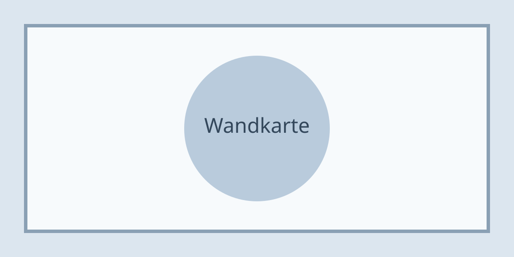

Der häufigste Fehler ist die Höhe: Die Mitte einer Wandkarte gehört auf etwa 150 Zentimeter, nicht auf Augenhöhe des Aufhängenden.
Für Papierformate ab 100 mal 70 Zentimetern lohnt eine Leiste oben und unten – sie hält das Blatt plan und verhindert Wellen.
Direktes Sonnenlicht bleicht Farben innerhalb weniger Monate aus. Eine Wand gegenüber dem Fenster ist besser als eine daneben.